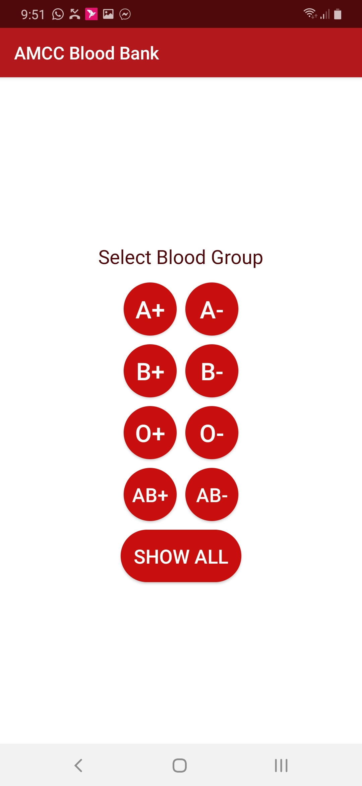
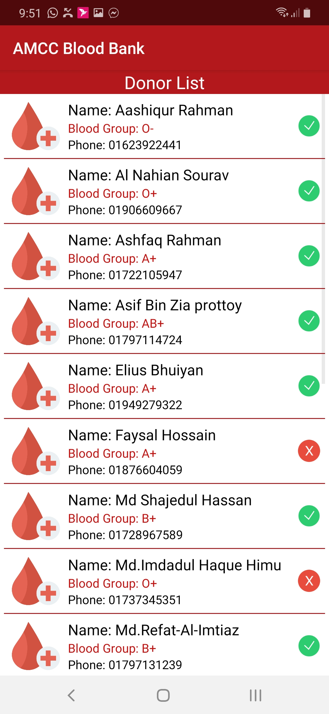
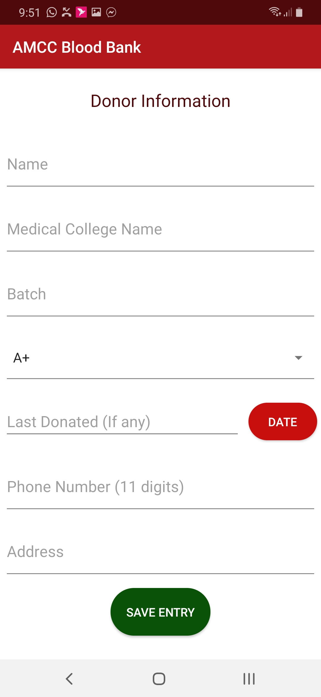
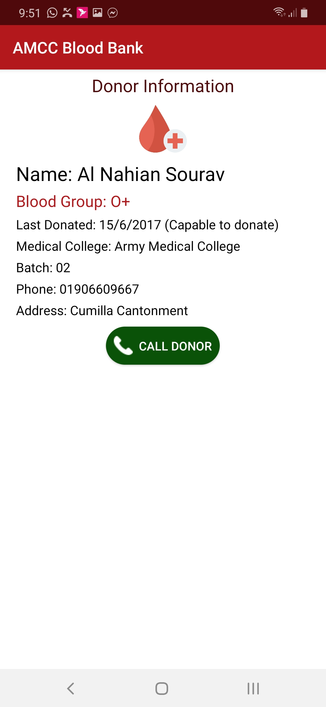
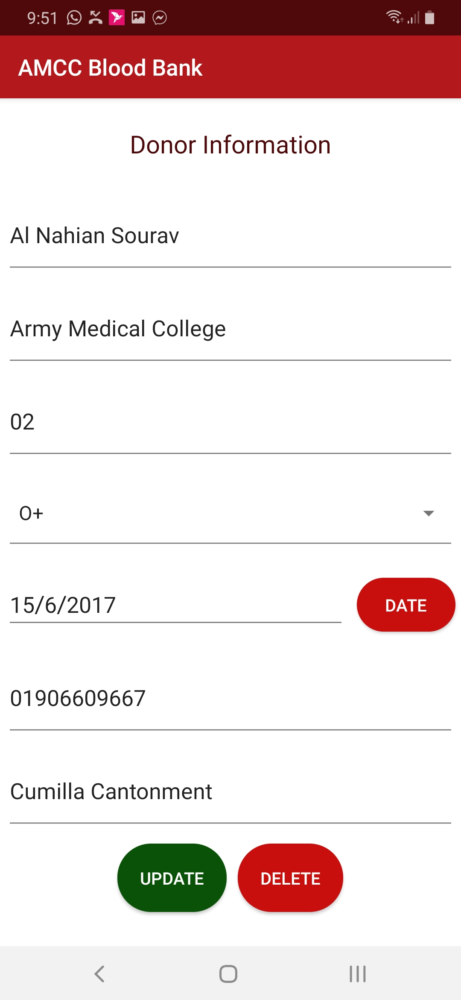

About
Worked on this Android project for a friend who was about to start a blood donation club in his medical college namely Army Medical College, Cumilla. This app includes information about the donors and let the user know if any donor is available to donate blood. I used Firebase database for the records and enabled both online and offline support for the application. Anyone who installed this on their device should be able to add donors on the database and every client installed will be synchronized with the Firebase database when they come online. This app doesn't require active online connection as offline support is enabled. Compiled this app in two modes such as - Admin and General. Admin version has the capability to delete or modify data from the database including all other features the General version can perform. On a short note, for the first time of my life earned some bucks writing an app which makes it special for me.
Development Tools
Android Studio, Firebase Console
Project Screenshot(s) of Admin Version
1. Application Homepage

2. Group Wise List
3. List of Donors
4. Add Donor
5. Donor's Detailed Information
6. Modify/Delete Existing Information
Project Features
- Interactive Minimal UI
- Online/Offline Support
- Categorizing Donors by Blood Group
- Add/Delete/Update Donor Information
- Automatic Calculation of Donor's Eligibility
Notes
- COPYRIGHT OF THIS PROJECT IS RESERVED & COPYING, SELLING, USING THE DESIGN IS TOTALLY PROHIBITED.
Go Back to Projects Next Project